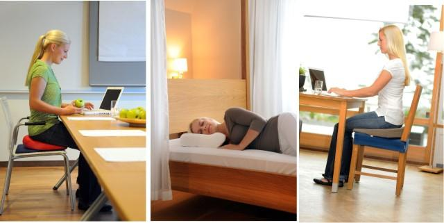

Ortopedinės pagalvės nuo 14.19 EUR | Fėjos namai
 Kontaktai Informacija +370 650 90903 Mielai padėsime :) Mielai padėsime :) +370 650 90903 ✂ PATALYNĖS SIUVIMAS VISA SIUVAMA PATALYNĖ ▹ Drobė ▹ Satinas ▹ Perkelis ▹ Linas DVIPUSĖ PATALYNĖ VAIKIŠKA SIUVAMA PATALYNĖ MIEGAMASIS Patalynės užvalkalai PREMIUM satinas (egiptietiška medvilnė) Satinas (100% medvilnė) Medvilnė (drobė) Glamžyta medvilnė Perkelis Flanelė Linas Pagalvių užvalkalai IŠPARDAVIMAS Dovanų kuponas Siuvama patalynė suaugusiems Paklodės Paklodės be gumos Paklodės su guma Neperšlampančios paklodės Siuvama dvipusė patalynė Antklodės Šilkinės antklodės Vilnonės antklodės Antialerginės antklodės Pūkinės antklodės Sintetinės antklodės Medvilninės antklodės Lininės antklodės Pledai Lininiai pledai Medvilniniai pledai Vilnoniai pledai Lovos užtiesalai Pagalvėlės Pagalvės Šilkinės pagalvės Vilnonės pagalvės Antialerginės pagalvės Pūkinės pagalvės Sintetinės pagalvės Ortopedinės pagalvės Grikių lukštų pagalvės Maitinimo pagalvės Lininės pagalvės Kelioninės pagalvėlės Vilnos čiužinėliai Antčiužiniai Čiužinio užtiesalai VAIKO KAMBARYS Patalynės užvalkalai Kūdikiams Mergaitėms Berniukams Paaugliams Kokio audinio ieškote? 100% medvilnė 100% medvilnės satinas 100% linas 100% perkelis 100% flanelė Patalynė Antklodės Pagalvės Čiužinėliai IŠPARDAVIMAS Paklodės Paprastos paklodės Paklodės su guma Neperšlampančios paklodės Mažylio miegas ir priežiūra Vaikiški čiužiniai Apsaugėlės Maitinimo pagalvės Kramtukai Šilumai ir jaukumui Vaikiški pledai Maudynėms / voniai Vaikiški rankšluosčiai Vaikiški chalatai KAMBARIO DEKORAS Vaikiški foteliukai Vaikiški pufai ir sėdmaišiai Vaikiški kilimai Vaikiškos palapinės JAUKUMUI Vaikiški lovos užtiesalai Vaikiškos dekoratyvinės pagalvėlės Krepšiai žaislams ir daiktams SVETAINĖ Jaukūs namai Lovos užtiesalai Pufai ir sėdmaišiai Kėdės ir suoliukai Kabantys krėslai Daiktakrepšiai Kilimai Kailiai Staliukai ir spintelės Užuolaidos DEKORO IŠPARDAVIMAS Dovanų kuponas Pledai Vilnoniai Medvilniniai Lininiai pledai Poliesterio pledai Vaikiški pledai Namų dekoravimui Vazos Terariumai augalams Molbertai ir stovai Žibintai Šviestuvai Namų kvapai Difuzoriai Kambarių ir audinių purškikliai VONIA IR SPA NAMŲ TEKSTILĖ Rankšluosčiai Medvilniniai rankšluosčiai Bambukiniai rankšluosčiai Lininiai rankšluosčiai Paplūdimio rankšluosčiai Kita vonios tekstilė Vonios chalatai Vonios kilimėliai NAMŲ KVAPAI Difuzoriai Kambarių/audinių purškikliai VIRTUVĖ TEKSTILĖ Virtuviniai rankšluosčiai Staltiesės ir servetėlės Prijuostės ir pirštinės SERVIRAVIMUI Indai Puodeliai Virtuvės reikmenys Gertuvės LAISVALAIKIS LAISVALAIKIUI IR STILIUI Gertuvės Kelioninės pagalvėlės AKSESUARAI Kojinės NAMŲ APRANGA Vilnos liemenės Vilnos chalatai Lininiai chalatai Vonios chalatai Kimono/chalatai Naktinukai/pižamos APRANGOS IR LAISVALAIKIO IŠPARDAVIMAS VAIKAMS IR KŪDIKIAMS Vaikiški marškinėliai Vaikiški džemperiai Vaikiškos kelnės ir šortai Vaikiškos suknelės/tunikos Smėlinukai ir marškinėliai AVALYNĖ Vilnos šlepetės ir aulinukai MYLIMIAUSIEMS % Pradžia > Pagalvės > Ortopedinės pagalvės AtgalGamintojas - Lonas Medžiaga 100% medvilnė 100% poliesteris Pasirinkite pagalvių dydį 50x70 cm Užpildas 50% putų polistirolas, 50% poliesterinio pluošto kamuoliukai 60% kapotas lateksas, 40% poliesterinio pluošto kamuoliukai
Ortopedinės pagalvės
FiltrasPagalvė NORA
55,00 €Pagalvė LYRA
55,00 €Pagalvė MEDA
55,00 €Pagalvė NIDA
55,00 €Pagalvė MINI NORA
35,00 €Ergonominė kapoto viskoelasto pagalvė
IšparduotaErgonominė kapoto latekso pagalvė su PES kamuoliukais
15,90 €Poilsis nakties miego metu turi teigiamą poveikį Jūsų kūnui ir lemia Jūsų gyvenimo kokybę. Tinkama pagalvė turėtų prisitaikyti prie Jūsų kūno. Ortopedinės pagalvės buvo sukurtos taip, kad suteiktų puikią ergonominę atramą, todėl miegant suteikiama tobula atrama galvai ir kaklui, todėl stuburas optimaliai išsitiesia.
Rodyti daugiau
Rodyti mažiau
GAUK 10EUR NUOLAIDĄ!
Informacija Apie Fėjos namus Pagalba pirkėjui Prekių pristatymas Prekių grąžinimas Pirkimo taisyklės Privatumo politika Rekvizitai užsisakyk naujienas ! Sutinku gauti tiesioginės rinkodaros pasiūlymus Įdomu sužinoti Kaip prižiūrėti patalynę? Populiariausi patalynės užvalkalų audiniai Natūrali patalynės priežiūra Kaip išsirinkti šlepečių ir aulinukų dydį Kaip išsirinkti patalynę? Kaip išsirinkti pagalvę? Kaip išsirinkti patalynės komplektą? Kaip išrinkti vaikišką patalynę? facebook Mokėjimo būdai Mokėjimas grynais FEJASNAMS.LV HALDJAKODU.EE DRAUGAI: LONAS.LT LONAS.LV LONAS.EE © 2020 PROHO, UAB. Visos teisės saugomos.